Customer Support Guidelines
Traders Manual for Resoving Issues
Traders Manual for Resolving Issues
Contact Phone Numbers for Senior Managers
DST Tech Team Contacts
To be used only when there’s a critical issue and no one is responding in Slack
Price Change Requests from Data Feed Clients
Template response that should be adapted if required (i.e. if we’re not going to make a change)
"We haven't seen any concerning activity at the current line/price, but happy to make a small adjustment and continue to monitor"
Manual Bet Settlement / Resettlement
V2 System Manual Verification: Bet Verification Report (Traders Manual)
CAN’T FIND BET / CLIENT IS GETTING AN ERROR ON BET PLACEMENT
- Both these occurrences can happen if clients experience technical issues with their wallet system at the time of bet placement
- If a client requests for a particular action to be taken for a bet that you can’t locate in any of our reports, then it’s likely the bet was never processed properly in the first place
- If this occurs, when we attempt to send a debit request for a newly created bet, we will receive an error message response from the client’s system
- This will also be the case if the client is complaining that user is receiving an error on bet placement
- The way to confirm this for our client is to try and locate the bet in the Integration Request Report (IRR)
- Ways to locate bet in IRR :
- Filter by User ID
- Filter by Sportsbook
- Try and get bet details from client including time of bet placement, then review the bets placed in IRR either by user ID or client around the the time of bet placement
- Click on [Show Params] to see the details of the bet including bet title
- Once you locate the bet, click on [Show Response] to see the error message returned by the client’s system
- We usually like to copy & paste this info for the client when responding to their inquiry
- You should also expect to see a HTTP code (column in IRR) not equal to 200/201 (means successful)
- For most integrations, errors result in a HTTP code = 400 / 500
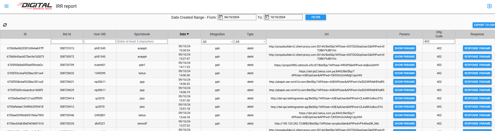
--- Email response examples ---
This bet was never processed as we received an error response from your wallet when we tried to send through the debit request at the time of bet placement.
RESET FAIL COUNT (WALLET SETTLEMENTS)
- Clients can experience technical issues with their wallet system
- If this occurs,
- If this occurs when we attempt to send a bet result the connection will fail and the result won’t go through
- You can manually trigger a re-push of the wallet request by locating the bet in the Bet Verification report >> selecting it via checkbox >> clicking Reset Fail Count (from bulk actions)
- This will tell the system to try resending the settlement request to the client’s wallet
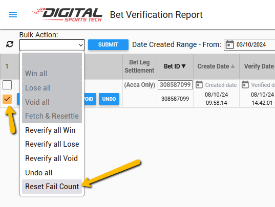
--- Email response examples ---
Your wallet returned an error message when we originally attempted to send you the settlement result for this bet. We've just tried to push this settlement request through to again. If it doesn't work, you'll need to handle this result manually on your side.
Game Voiding Rules
What happens if the game is cancelled, postponed, abandoned, or if the venue changes (Player Markets)?
(i) If a game is cancelled or postponed before starting and does not resume the same day, then all player prop bets will be voided;
(ii) If the venue is changed from the one scheduled before starting, all player prop bets on the match will stand provided the game is played on the original scheduled date, and the home team is still designated as such.
(iii) If the game has started but is then cancelled, abandoned, or postponed and does not get completed within 36 hours of the originally scheduled start time (local time), then all pending player prop bets that haven’t already been settled based on an outcome being unequivocally determined during the game will be voided (please note the only leagues that have player bets settled in-running are NBA, NFL, NHL, WNBA and MLB).
Soccer Player Mapping
See: https://docs.google.com/document/d/1eNWVdWAgqOwZCbvP65iH3q4UIrSGmkoT3Usp16dMYHA/edit
Data Feed Queries
REPUSH CORRECTED SETTLEMENT FOR DATA FEED MARKET (DFM)
If we become aware of the late statistic correction change for any of our major US sports only (NBA, NFL, MLB, NHL, NCAA) we should be repushing corrected settlements for our data feed clients.
- Access DFM Markets report: https://trading-tool.digitalsportstech.com/#!/push-manager/dfm
- This report enables us to change the result for any DFM and resend the new result to all data feed integration clients including Sportradar
- Use table filters to locate markets for specific player(s) you want to review and resettle
- ‘Final Score’ column displays the value we received and used for our market settlement
- To regrade + re-push settlement for a single market
- Click on row in table
- Input new results from drop down
- Input the updated player score used for settling this market
- Click Save / Re-Push
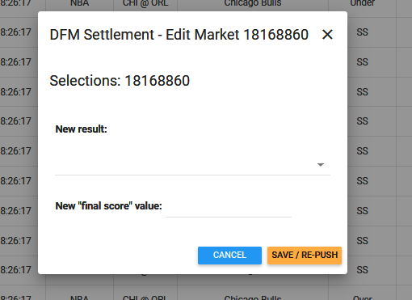
- To regrade + re-push BULK changes
- Use checkbox in far left column to select rows (markets) to bulk regrade
- Make sure you’re selecting markets which have the same result
- Click Pen Icon top right to bring up resettlement modal
- Input new result + score and click save / re-push
- https://www.screencast.com/t/LZLpqoXc2cc
Screen recording example: https://app.screencast.com/SzQu1aOpCq89e
MISSING SETTLEMENTS
- If DF client is claiming settlements are missing, first locate the game in the DFM Audit Report
- This will show you if there are any pending settlements
- PMOS count = number of prematch markets we sent
- Settlement count = number of settlements we sent them
- IF there are pending settlements, please raise issue with tech support so they are aware
- Even if there isn’t any pending settlements, in order to try and resolve the issue for the client, including Sportradar, we should attempt resend settlements for the specific event queried
- Open DFM Game Report
- Locate event in question
- Click on event row in table
- Click re-push
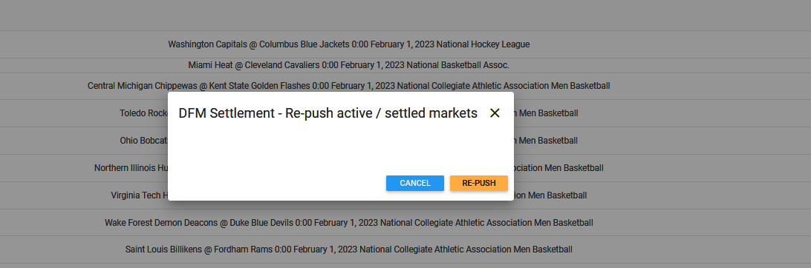
PUSH LOGS FOR DATA FEED CLIENTS
Our Logs Report keeps a record of each message we push to the client’s system.
Our Sportradar Logs report does the same thing
- Sportradar PMOS Prod 2 will contain all messages sent for prematch markets excluding settlements
- Sportradar Settlements PROD 2 will contain all our settlement messages
- So if you are searching for a settlement you should use this filter, otherwise, use the other one above
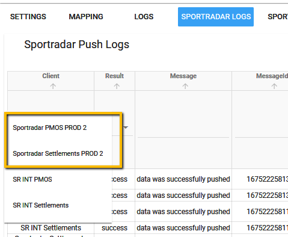
Our pushed messages include market generation, odds updates, enabled/disabled updates, and settlements.
- Use the filters in the report to try and locate the specific information you are looking for based on the clients query. You should also filter the report by the specific client raising the query.
- The ultimate way to locate markets for an individual player is to use the DST Player ID filter. To locate a player’s ID, locate the player in our PPM or ORR >> hover over their name with mouse >> ID appears bottom leg as a 6-digital value
Events Not Settled
- Check when game ended in Game Changes Nix report (status 4)
- Locate event in the Nix Game Activity Manager
https://backend.digitalsportstech.com/propbetting/game-activity
- Check game status within the report:
- If Is_completed = Y and Is_finally_resulted = N
- Means Sportradar haven’t closed the game → need to contact them via email support@sportradar.com; or
- Means we haven’t received EBL results in SST → need to contact them via email support@sportradar.com; or
- Means we haven’t received player statistics from DSG for Soccer event settlement (you can check and confirm this via viewing game in SST) E.G. https://app.screencast.com/lTZFwY32pe25Z
- If this is the case you need to contact their support via email support@datasportsgroup.com; or
- If we do have all Soccer/EBL stats in SST but finally resulted is N, it means our SST auto settlement hasn’t kicked in for either EBL or Soccer → need to trigger this manually in the SST report by clicking start verification
- If Is_finally_resulted = Y but event is blocked by game markets = see #3 below
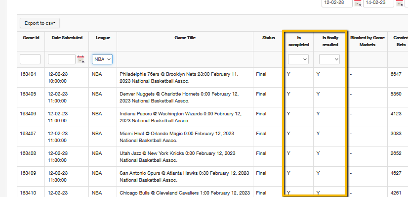
- If blocked by game markets
- Check GFM Report to see if we have settlements for our game markets
- IF NO = click markets sync in Game Manager (PL) report for the event to see if that unblocks it https://www.screencast.com/t/oAaYL3ulXDJg
- IF Yes = escalate issue to senior management and tech support as it will likely require the assistance of one of our tech staff to resolve
Price/Line Queries - Responses to Clients
Key points:
- We need to be responding in as timely a manner as possible to any price or line queries from our clients. Most important at the moment are the following data feed clients:
- Foxbet (slack)
- Sportradar (slack)
- Kaizen Gaming / Stoiximan (email)
- Betvictor (email)
- Tipico (email)
- Clients will usually compare our line/price to a key comp like bet365 or Pinnacle. Whilst we generally want to oblige to the client’s request, it’s imperative that we first look at our bet activity to make sure any move doesn’t harm our current position
- When we want to make sure we
- e responses to these requests, otherwise it gives the client the impression that we’ve got things wrong and are not on top of our markets (see examples below)
- Key is to try and justify our position in the first instance before informing them that we have made an adjustment
- Keep it fairly vague in terms of reasoning. We are not required to justify our trading strategy to them, it's more of an accommodation.
- It's better to say things like "we are seeing sharp activity on the under" instead of "we have a winning user on the under" or "we have 2 sharp users on the under"
BetVictor
- Note that with Betvictor specifically they will be using our SS projections for any stats that we don’t players active for O/U (e.g. steals, blocks and even 3pt) and will be using these projections to set their own O/U lines
- If our SS projection is high compared to market comp lines Betvictor will send an email complaining about it
- Majority of the time in these cases we should be fine to lower the SS projection for them
- If they send a query through about Turnovers you need to mention that we’re not sending them any projections or lines for this statistic
- When responding we want say something along the lines of:
“We’re not sending you an O/U for this player, but have now adjusted our projection which should help resolve this issue for you”
--- Example Responses (Slack / Email) ---
We haven't seen any bad activity on it, but will drop down to match the latest comp changes. Seems like half the market is at 28.5, half at 29.5 still. Will continue to monitor.
We haven't had any bad activity but we'll update the price to be closer in line with comps.
Hi, we’ve shortened it to 1.88. However, we haven’t seen any worrying activity on this market.
We have some sharp under activity on this one, so we'll hold for now and continue to monitor.
We had sharp activity earlier this morning, but happy to shorten this to 1.88
We have a sharp tipster group on the over for Giannis assists, so we'll hold for now and continue to monitor.
We can go to even, we have a lot of sharp activity on the under which is why we are so different from comps
We haven't seen any bad activity on it. I see most comps are favoring the over slightly but haven't seen a need for that yet. Will continue to monitor
Comps appear to be all over the place on Lowry today. Some books are at 15.5, some are at 16.5, and others at 17.5. We haven't had any bad action at 15.5, but will go up to 16.5 just to be in the middle of comps currently
We do not have any sharps at the moment, but no bad action yet. We will update price to be closer to comp price changes
We do have some under sharp activity on Rubio, but will update the price a bit
We are seeing significant over activity on this match including sharper users. It's a big national TV game which is driving the interest so we're happy to hold for now
Hi, we've shortened it to 2.0 now. Haven't seen any bad activity on our end.
We'll cut the price a bit but don't want to be too aggressive. We've also seen no bad action
Other Customer Service Queries
SOCCER SETTLEMENT DISPUTE
- All competitions are settled using Opta data
- Quite often you will find that Opta have made a late change which should be communicated to the client and it’s then their choice whether we regrade the bet or not (we won’t regrade all affected bets)
All of our settlements are based on Opta scores available at the time of grading, which is when games have completed the provider's initial QA process. However, from time to time, further score changes are made post this timeframe by the provider and they are not monitored. If users want to check if there are any discrepancies, they would need to check a site like www.whoscored.com that uses Opta data.
- If a data feed client like Radar, Altenar, Betby, Metric ask us to change bet grading due to a post-settlement stat change:
- We do not update feed results post-settlements for soccer stat corrections
- They can instruct their clients to amend bet results at their own discretion. Our results are based on scores available at time of settlement.
- If an integrated client asks us to resettle bets due to post-settlement stat correction: Ask for Bet IDs they would like changed and action through the bet verification report.
VOID (CANCEL) BET REQUESTS
- Locate the individual bet in the Bet Verification report and click [Void] button to cancel the bet
- All sportsbooks have the ability to do this themselves via STM so we want to be reminding them of this so we can avoid these requests
VOIDED IN-PLAY BETS
In-play traders will void any bets they see at bad odds as soon as they see them come in. Most of the time it’s because some users are try to place bets ahead of our odds calc updates. Other times the bad odds may be caused by a technical issue. Below are two responses that should be used (adapted) in your reply to CS email.
"Please note that this in-play bet was placed before our system could update the odds after a big play by [Player X], and the bet was voided as soon as we identified the delay in updating the odds."
This was an in-play bet that was voided soon after it was placed. The reason is that this livewager was submitted before our lines were updated following a significant play involving [Player X]. Occasionally, there may be slight delays in receiving live play-by-play updates from our provider, Sportradar. Our traders monitor these situations closely to ensure all wagers are placed using the most up-to-date information.
There was a temporary disruption with our live data feed provider which led to a delay in receiving updated player scores and out of date lines and prices. This bet was one we voided soon after it was placed and it ended up being made on a known winning outcome as a result of the feed latency.
Due to a temporary disruption with our live data feed provider, there was a delay in updating player scores, lines, and prices. As a result, this bet was voided shortly after placement, as it was made on a known winning outcome caused by this feed latency.
VOIDED IN-PLAY BETS ON INJURED PLAYERS
This is for cases when we end up need to Void Under bets that were placed on an injured player but before we picked up on the situation
Bets were voided due to the player being injured. The bets were placed shortly after the injury and before our live feed could suspend his markets
EARLY GRADING REQUESTS
- From time to time clients will request settlement of a bet even though the event hasn’t finished (request originates from the betting client)
- In these cases we remind them that all bets will be settled at the completion of the event
- If they request an early Void due to a player not playing, then we’re happy to oblige to these requests
All bets for this game will be settled at the completion of the match.
CORRECTION CAUSED BY DATA INTEGRITY ISSUE (ALL SPORTS)
- If there has been some sort of data integrity issue that we have discovered such as an incomplete data file, a blatant error from the provider (e.g. Sportradar) that leads to a score discrepancy vs. official data source (e.g. NFLGSIS, NBA.com, etc), or an issue caused by tech, then we are obliged to fix and regrade all affected bets + re-push all affected DFM markets
- If there is an after settlement change/correction that has been picked up well after our settlement (i.e. more than say 2 hours), we should only resettle bets on request. Don’t update DFM.
- If a correction is picked up very soon after settlement, then we can proceed with correcting DFM and all bets via BER.
It appears an error was made for this player’s score by our stats provider, so we’ll proceed to correct all affected bets.
STATISTIC CORRECTION (US SPORTS)
- If a post-settlement correction is made to a US sports, we need to update the results of all affected DFM markets re-push these to our data feed clients (see DF queries)
- Any affected bets should be regraded via Bet Verification report on client request only
It appears a correction was made to this player’s score post our settlement. Please confirm if you would like this bet resettled or not.
STATISTIC CORRECTION (SOCCER)
- If a post-settlement correction is made to a player’s score then we need to make the client aware of this and ask them if they’d like us to resettle the specific bet questioned
- We will only regrade affected bets requested by the client
- We are not required to update and re-push DFM markets
It appears a correction was made by Opta to this player’s score post our settlement. Unfortunately, this occurs from time to time with this sport and is something outside of our control. Please advise if you like us to resettle this specific bet and any others impacted by this score correction. Thanks
INCORRECT GRADING FOR GAME PROPS
These happen from time to time and are usually caused by bad/incorrect data points being recorded by SR in their play-by-play feed.
It appears we received an incorrect data point in our provider’s play-by-play feed which has led to an erroneous grading by our automated settlement system. We’ll proceed to correct all affected bets. Thanks
SETTLEMENT QUERY - ACCUMULATORS
- Prebuilt accumulators will be voided as soon as one bet leg is voided (for data feed clients only)
- IF bet is placed on a prebuilt Acca via our builder, the acca will get graded normally
- Prebuilt accumulators can be distinguished from user-built by bet type = AccaP / AccaG (user built Accas will simply with have bet type = Acca)
- We also have a rule for user-built accumulators where if there is one bet leg remaining after other bet leg(s) are voided, then the entire bet is voided no matter what the result of the remaining bet leg
- All the rules above are located in our FAQ
Early Acca Settlement Logic
Scenarios:
- IF Acca has 2 bet legs = settle the bet once both bet legs have been resulted
- IF Acca has 3 or more bet legs = settle the Acca bet as Lose as soon as there are
- two or more resulted bets that are not Void; and
- where one or more of these results = Lose
This was a prebuilt parlay with a voided leg. As per our rules, the entire prebuilt parlay bet is voided as soon as one or more bet legs are voided.
The bet was voided according to our rules: Accumulators will be Voided and stakes returned if all bet legs are voided except for one remaining bet leg. For example, if you have a 2-leg accumulator and one of the bets is voided, then the entire accumulator is voided no matter if the remaining bet leg wins or loses.
PENDING BET NOT SETTLED
- From time to time clients will send an email regarding an old bet in their system that appears to be pending. This can mean one of three things:
- Bet was never processed in the first place due to wallet issue
- Bet won’t appear in our in our bet activity or verification report
- If you search Integration Request Report you will see transaction failed at bet placement
- Refer to Reset Fail Count section and template email responses for when this query arises
- Bet settlement never made it through to client because of wallet issue
- Refer to Reset Fail Count section and template email responses for when this query arises
- Bet was not settled for some reason on our side
- Will require manual settlement via Bet Verification report
MAX EXPOSURE - BET LIMIT QUERIES (FOR DUPLICATES IN ACCAS)
- Clients will write in querying why their user is being limited on a Acc/Parlay bet with an amount which is lower than their preset max exposure (for Accas)
- 99.9% of the time this is because one of the bet legs in the parlay is a duplicate bet (same player & stat only, not value) that exists within another pending parlay market
- We have a Max Exp Laddering risk setting for all clients
- This means if the setting limits is $8K and bet 1 for the user with <Player X Points> uses up exposure of $2K, then the next Acca will be limited to $6k max exposure if the user wants to reuse the same <Player X Points> market
- If Acca bet 1 uses up exposure of $9.0K, then the user will not be able to place another parlay with any of the bets included in the original parlay since the exposure already exceeds $8.0K
- In summary, the user’s individual max exposure limit for parlays does not come into play as soon as a duplicate bet leg is involved
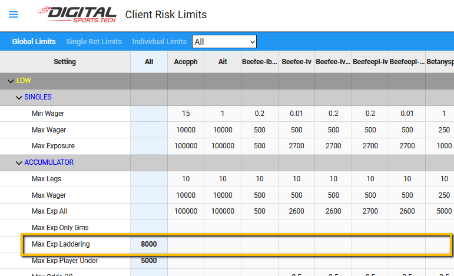
We have a global risk mitigation measure in place for all clients that limits exposure on duplicate bet legs within parlays. Your limit is currently set to $X. This means the user's individual risk setting has no influence as soon as a duplicate bet leg(s) is involved, unless their preset limit is lower than the remaining exposure calculated for the duplicate player/stat bet leg. In this case, the user has a pending bet(s) with a duplicate leg [mention the player] which is why their allowable bet limit is lower than usual for parlays.
The user couldn't place another acca bet because your sportsbook has a global max exposure limit ($X) applied to all parlays that include one or more duplicate legs with other pending parlay bets. This is an important risk mitigation measure to prevent users from abusing the system.
UNDERS LIMITS - USER GETTING LOWER LIMITS FOR UNDER BETS
- Our system auto limits new users to $250 max exposure for Under bets (exceptions are listed below).
- Once they start placing other bets (e.g. overs) this limit is removed (must have 5 graded wagers of another type).
- This auto-limit is in place to try and catch new sharp users early on and limit any potential damage they do before we have a chance to update their risk profile
Client | Exposure Limit |
Buckeye | $500 |
Diamond | $500 |
Everyone else | $250 |
This user is currently being limited to $250 for all Under bets. Our system limits all new users who are predominantly betting on 'Unders' only as they are deemed high risk until such time they start to wager on other bet types (e.g. overs).
Our system automatically limits new users who are betting predominantly on Unders only. This is a risk control measure that applies to our entire client base. These limits are automatically removed once the user has placed a certain number of non-under bets.
LIMITS ON ACCA’S WITH UNDERS - USER GETTING LOWER LIMITS THAN SETTINGS
- We has a risk setting for all clients when an Acca consists predominantly of Under bets
- Risk setting = Max Exp Player Under
- Limiting rule:
- IF Acca has 2+ legs AND ALL legs are Player Under bets on players = apply limit
- IF Acca has 3 legs AND 2 out of 3 legs are Player Under bets on players = apply limit
- IF Acca has 4 legs AND 3 out of 4 legs are Player Under bets on players = apply limit
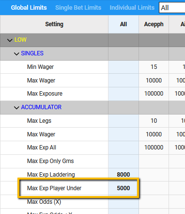
Our system automatically limits users to $X if they attempt to place a multi bet that consists of all or a majority of Under bet legs. This is a risk control measure that applies to our entire client base and helps avoid sharp users circumventing their stricter limits by combining bet legs in a multi.
LIMITS ON ACCA’S WITH 2 BET LEGS ONLY
- IF Acca has 2 bet legs only AND at least one leg has odds <= 1.30 THEN max exposure is reduced by 75%
- IF Acca has 2 bet legs only MAX EXPOSURE is reduced by 50%
Our system automatically reduces the user’s available max exposure for an accumulator bet when it includes 2 bet legs only and when one or more of the legs is very low odds. This is in place to prevent users from trying to work around their usual single bet limits by pairing bets with a very short odds outcome.
We have a global risk mitigation in place for all clients that reduces allowable exposure for a parlay with 2-legs only. This is done because some users try to work around their single bet limits via 2-leg parlays. In this case, the user's allowable exposure has been reduced by 50%. If you'd like your book and all your users to be excluded from this rule, please let us know.
LIMITS ON SOCCER ACCA’S WITH PASSES/TACKLES
- IF Acca has has either a Passes or Tackles bet leg THEN limit max exposure to $200
- IF Acca has a duplicate Passes or Tackles bet leg that is included
- Leg that is included in another Pending bet THEN set max exposure limit to $0
LIMITS ON NBA BETS REDUCED (HIGH RISK PLAYERS)
We are reducing prematch max exposure reductions for NBA players that have pregame lower projected minutes (high risk).
These reduction rules will apply to prematch single bets on either of the following player markets:
if projected minutes between 16-25 = reduce max exposure by 50% (i.e. 0.5 x max exp)
else
if projected minutes is < 16 = reduce max exposure by 75% (i.e. 0.25 x max exp)
VIEW ODDS HISTORY
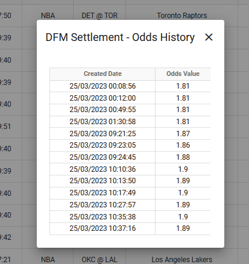
LIMITS ON ACCAS WITH EXACT BET LEGS
- IF Acca has one or more EXACT bet leg the system will make max exposure the lower of $1,000 and the user’s existing limit
- IF Acca has one or more EXACT bet legs that is a duplicate within another Acca bet, then the allowable max exposure will be = $0
Our system applies a global risk measure that ensures the exposure of an Acca (or parlay) never exceeds $1,000 whenever one or more Exact bet legs are included.
As a global rule our system prohibits any Acca (or parlay) bets that contain a duplicate Exact bet leg with another pending bet already submitted by the user.
CLIENT REQUEST TO SHUT OFF CUSTOMER ACCOUNT
Clients will occasionally contact us to “shut off” or “disable” a customer account.
- Look up the customer in the Users Report.
- Click the “Indiv” Risk Level check box.
- Add a note that the user is disabled per client request.
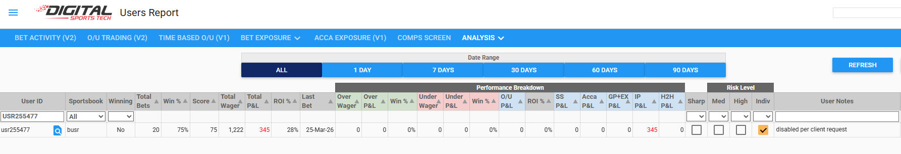
- Go to the Client Risk Limits Report and click Individual Limits. Search for the user and click on them.
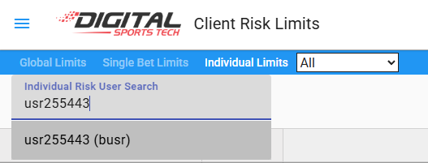
- Open the GLOBAL settings, and SINGLES and ACCUMULATORS menus.
- Set all Max Wager and Max Exposure options to 0 for singles and accumulators. Respond to the client that the requested user is now disabled.
PLEASE NOTE: Clients can also do this on their end in the STM system. Let them know they can handle future requests like this on their end.
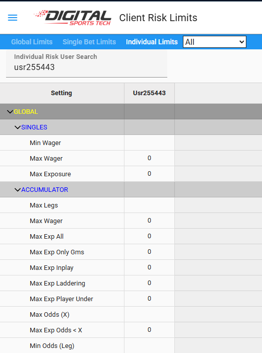
MLB POSTPONED GAME SETTLEMENT PROTOCOLS
If a game gets postponed and Void game request comes through via email, please do the following:
- Void the game via the Void Games Report
- Check if game ID is the same (will usually be the same if rescheduled to next day or within next couple of days)
- IF game ID is different, there won't be a need to do anything after voiding the game via our report; ELSE
- IF game ID is the same, Game Markets will need to be settled manually as voids via our GFM report
- Once everything has settled (allow 15+ minutes), please revert all Game Markets back to Pending state via the GFM report so they can be used again in the next game
MLB EARLY SETTLEMENT (GAME FINAL BEFORE 8.5 INNINGS COMPLETED)
- Game Markets should settle as won/loss from feed. Handicap should be void. Total runs should be void if outcome isn’t known.
- Game Props should settle normally except the following should void: “will there be extra innings”, “team with most hits”, “total hits”, “a hit every inning”, “a run scored every inning”, “perfect game”, “blown save in game”, “either pitcher to throw a no-hitter”.
MLB SPORTRADAR PLAYER SYNC
- We're seeing frequent occurrences of players being added late to MLB rosters in the Sportradar API which leads to a syncing issue with the feed we push to SR (i.e. they don't receive markets for these players even if we have them active). So if you see queries come through like the one below, repushing our markets will not resolve the issue.
- Instead, you need to go to the Sportradar Player Mapping report to get these newly added players mapped. The best way to approach this is to (1) filter by the relevant league (e.g. MLB), then (2) click on the icon top right which will run a full sync. This should hopefully resolve the issue. Once done you can search for the player(s) in question to confirm they have been mapped to a SR ID.
MANUALLY VOIDED IN-PLAY BETS ON INCORRECT LINES (NFL)
We sometimes have to manually void in-play bets if we can clearly see the user is betting ahead of our feed, which means they are getting lines/odds that may not have been updated for the latest big play.
This was an in-play bet that was voided soon after it was placed. The reason is that this wager was submitted before our lines were updated following a significant play involving this player. Occasionally, there may be slight delays in receiving live play-by-play updates from our provider, Sportradar. Our traders monitor these situations closely to ensure all wagers are placed using the most up-to-date information.
This in-play bet was voided as it was placed just before our lines updated following a significant play. Occasionally, there may be slight delays in receiving live play-by-play updates from our provider, Sportradar, particularly during major plays. Our traders monitor these situations closely to ensure all wagers are placed using the most up-to-date information.